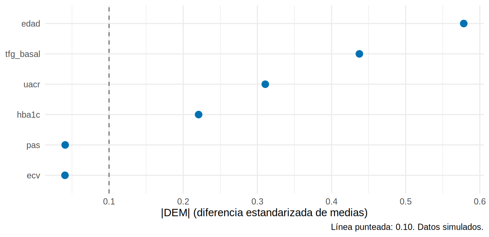

library(tidyverse)
source("R/funciones_epi.R")
source("R/tabla1.R")
ckd <- read_csv("Bases/ckd_isglt2.csv", show_col_types = FALSE) |>
mutate(
sexo = factor(sexo, levels = c("Mujer", "Hombre")),
trat = factor(isglt2, levels = 0:1, labels = c("Sin iSGLT2", "Con iSGLT2")),
cat_g = categoria_g(tfg_basal), cat_a = categoria_a(uacr),
riesgo = riesgo_kdigo(cat_g, cat_a)
)
etiquetas <- c(edad = "Edad, años", sexo = "Sexo", hba1c = "HbA1c, %", pas = "PAS, mmHg",
tfg_basal = "TFGe, mL/min/1.73 m²", uacr = "UACR, mg/g",
ecv = "ECV previa", riesgo = "Riesgo KDIGO")La Tabla 1: ¿quiénes son y son comparables?
Nota🩺 Escenario
Terminaste de recolectar tu cohorte: pacientes con ERC y diabetes que iniciaron o no un iSGLT2 (datos simulados). Tu tutor te pide “la Tabla 1 para el manuscrito”. El revisor, además, quiere saber si los dos grupos se parecen lo suficiente como para compararlos. Una sola tabla tiene que contestar ambas cosas.
Lo que vamos a hacer
- Entender qué dos preguntas contesta la Tabla 1 y por qué no lleva valores p (o no solo ellos).
- Construirla con la función
tabla1()del libro, para toda la cohorte y por grupo de tratamiento. - Leer la diferencia estandarizada de medias (DEM), verla en un gráfico y exportar la tabla a Word.
Paso 1. Qué contesta la Tabla 1
La Tabla 1 de un artículo describe las características basales de la población, en total y por grupos. Responde a dos preguntas del lector:
- ¿Quiénes son estos pacientes? (validez externa: ¿se parecen a los míos?).
- ¿Son comparables los grupos? (validez interna: ¿hay un desbalance que pueda confundir?).
Para la segunda pregunta la costumbre es poner un valor p al lado de cada fila. Es una mala costumbre:
- En un ECA bien aleatorizado, cualquier diferencia basal es fruto del azar; un valor p no tiene sentido (CONSORT lo desaconseja).
- En un estudio observacional, la pregunta no es “¿es significativa la diferencia?” sino “¿qué tan grande es?”. El p depende del tamaño de muestra: con 5 000 pacientes, diferencias triviales salen “significativas”; con 50, diferencias grandes no.
- La medida recomendada es la diferencia estandarizada de medias (DEM; SMD en inglés): la diferencia entre grupos expresada en unidades de DE, independiente de n. Se considera un desbalance relevante una |DEM| > 0.10.
Paso 2. La función tabla1()
El libro incluye R/tabla1.R con la función tabla1(), que no depende de paquetes externos. Los argumentos que más usarás:
datos,vars: la base y las variables que quieres describir, en el orden de la tabla.grupo: la variable que define las columnas (si la omites, una sola columna “Total”).no_normales: las continuas que se resumen con mediana [Q1, Q3] (las asimétricas, Cap. 7.1).binarias: las codificadas 0/1 que se muestran en una sola fila (“ECV previa, n (%)”).etiquetas: nombres presentables, p. ej.c(edad = "Edad, años").valor_p,dem,faltantes: mostrar o no cada columna.
Una sola columna: toda la cohorte
Empezamos por la versión más simple: sin grupo, solo “¿quiénes son?”.
tabla1(
ckd,
vars = c("edad", "sexo", "hba1c", "pas", "tfg_basal", "uacr", "ecv"),
no_normales = "uacr", binarias = "ecv", etiquetas = etiquetas
)# A tibble: 10 × 3
Variable Total Faltantes
<chr> <chr> <chr>
1 n "5000" ""
2 Edad, años, media (DE) "63.8 (10.0)" "0"
3 Sexo, n (%) "" "0"
4 Mujer "2258 (45.2%)" ""
5 Hombre "2742 (54.8%)" ""
6 HbA1c, %, media (DE) "7.8 (1.2)" "0"
7 PAS, mmHg, media (DE) "134.9 (15.1)" "0"
8 TFGe, mL/min/1.73 m², media (DE) "46.0 (9.5)" "0"
9 UACR, mg/g, mediana [Q1, Q3] "118.0 [59.0, 248.0]" "0"
10 ECV previa, n (%) "1367 (27.3%)" "0" Cómo se lee. Cada fila trae su resumen en el nombre: “media (DE)” para las simétricas y “mediana [Q1, Q3]” para la UACR, que declaramos asimétrica. Las categóricas muestran n (%) por nivel. La columna Faltantes debe estar siempre; aquí es 0 porque la base está completa.
Por grupo de tratamiento
Ahora añadimos grupo = "trat": la función agrega el valor p y la DEM de cada fila.
t1 <- tabla1(
ckd,
vars = c("edad", "sexo", "hba1c", "pas", "tfg_basal", "uacr", "ecv", "riesgo"),
grupo = "trat", no_normales = "uacr", binarias = "ecv", etiquetas = etiquetas
)
knitr::kable(t1, align = "lrrrrrr")| Variable | Sin iSGLT2 | Con iSGLT2 | Total | Faltantes | p | DEM |
|---|---|---|---|---|---|---|
| n | 2650 | 2350 | 5000 | |||
| Edad, años, media (DE) | 66.4 (9.6) | 60.8 (9.6) | 63.8 (10.0) | 0 | <0.001 | -0.58 |
| Sexo, n (%) | 0 | 0.312 | ||||
| Mujer | 1179 (44.5%) | 1079 (45.9%) | 2258 (45.2%) | 0.03 | ||
| Hombre | 1471 (55.5%) | 1271 (54.1%) | 2742 (54.8%) | -0.03 | ||
| HbA1c, %, media (DE) | 7.7 (1.1) | 8.0 (1.2) | 7.8 (1.2) | 0 | <0.001 | 0.22 |
| PAS, mmHg, media (DE) | 135.2 (15.1) | 134.6 (15.2) | 134.9 (15.1) | 0 | 0.150 | -0.04 |
| TFGe, mL/min/1.73 m², media (DE) | 44.1 (9.1) | 48.1 (9.4) | 46.0 (9.5) | 0 | <0.001 | 0.44 |
| UACR, mg/g, mediana [Q1, Q3] | 97.0 [49.0, 196.8] | 154.0 [74.0, 312.8] | 118.0 [59.0, 248.0] | 0 | <0.001 | 0.31 |
| ECV previa, n (%) | 747 (28.2%) | 620 (26.4%) | 1367 (27.3%) | 0 | 0.153 | -0.04 |
| Riesgo KDIGO, n (%) | 0 | 0.003 | ||||
| Bajo | 18 (0.7%) | 26 (1.1%) | 44 (0.9%) | 0.05 | ||
| Moderado | 264 (10.0%) | 253 (10.8%) | 517 (10.3%) | 0.03 | ||
| Alto | 945 (35.7%) | 927 (39.4%) | 1872 (37.4%) | 0.08 | ||
| Muy alto | 1423 (53.7%) | 1144 (48.7%) | 2567 (51.3%) | -0.10 |
Paso 3. Cómo leer la tabla (de verdad)
Mira primero la DEM, no el p:
- Edad: los tratados son más jóvenes (DEM = -0.58): casi 0.6 desviaciones estándar de diferencia. Es el desbalance más grande.
- TFGe, UACR y HbA1c: los tratados tienen más TFGe (DEM = 0.44), más albuminuria (0.31) y más HbA1c (0.22). Es lo esperable en la práctica: se prescribe el fármaco a quien tiene albuminuria y a quien no está demasiado frágil.
- PAS, ECV y sexo: |DEM| ≤ 0.04. Están balanceados.
Los valores p siguen la misma historia (muy pequeños donde la DEM es grande), pero con n = 5 000 incluso una diferencia trivial podría salir “significativa” y con n pequeño una grande no. La DEM no depende de n.
Esa diferencia entre grupos es exactamente confusión por indicación (Cap. 3). Una comparación directa de los desenlaces estará sesgada; en el Cap. 12 repetiremos la Tabla 1 después de ajustar para ver si el balance mejoró. Una Tabla 1 con DEM pequeñas no demuestra ausencia de confusión (faltan las variables no medidas), pero una con DEM grandes demuestra que el ajuste es indispensable.
Paso 4. Ver las DEM en un gráfico
Con muchas filas, un gráfico de DEM absolutas (love plot) resume el desbalance de un vistazo. Usamos smd() de R/funciones_epi.R:
vars_num <- c("edad", "hba1c", "pas", "tfg_basal", "uacr", "ecv")
dem <- tibble(variable = vars_num,
DEM = map_dbl(vars_num, \(v) smd(ckd[[v]], ckd$isglt2))) |>
mutate(variable = fct_reorder(variable, abs(DEM)))
ggplot(dem, aes(abs(DEM), variable)) +
geom_vline(xintercept = 0.1, linetype = "dashed", color = "grey40") +
geom_point(size = 3, color = "#0072B2") +
labs(x = "|DEM| (diferencia estandarizada de medias)", y = NULL,
caption = "Línea punteada: 0.10. Datos simulados.") +
theme_minimal(base_size = 11)
Los puntos a la derecha de la línea punteada (edad, TFGe, UACR, HbA1c) son los que requieren ajuste. En el Cap. 12 el mismo gráfico mostrará puntos “antes” y “después” de ponderar.
Hay un matiz con las variables sesgadas: la DEM de la UACR usa la media y la DE crudas, muy influidas por valores extremos. Calculada sobre el logaritmo, la diferencia sube de 0.31 a 0.43: con la escala cruda estábamos subestimando el desbalance de albuminuria.
Paso 5. La “otra” tabla: por desenlace
A veces conviene una segunda tabla descriptiva, con los grupos definidos por el desenlace (¿en quiénes ocurrió el evento?) en lugar de por la exposición. Es descriptiva y cruda: no estima efectos.
ckd <- ckd |> mutate(desenlace = factor(evento, levels = 0:1, labels = c("Sin evento", "Con evento")))
tabla1(ckd, vars = c("trat", "edad", "tfg_basal", "uacr", "ecv"),
grupo = "desenlace", no_normales = "uacr", binarias = "ecv",
etiquetas = c(trat = "Tratamiento", edad = "Edad, años", tfg_basal = "TFGe",
uacr = "UACR, mg/g", ecv = "ECV previa"),
valor_p = FALSE) |>
knitr::kable(align = "lrrrrr")| Variable | Sin evento | Con evento | Total | Faltantes | DEM |
|---|---|---|---|---|---|
| n | 4235 | 765 | 5000 | ||
| Tratamiento, n (%) | 0 | ||||
| Sin iSGLT2 | 2141 (50.6%) | 509 (66.5%) | 2650 (53.0%) | 0.33 | |
| Con iSGLT2 | 2094 (49.4%) | 256 (33.5%) | 2350 (47.0%) | -0.33 | |
| Edad, años, media (DE) | 63.1 (10.0) | 67.7 (9.6) | 63.8 (10.0) | 0 | 0.47 |
| TFGe, media (DE) | 46.6 (9.3) | 42.5 (9.4) | 46.0 (9.5) | 0 | -0.44 |
| UACR, mg/g, mediana [Q1, Q3] | 109.0 [55.0, 232.0] | 180.0 [86.0, 358.0] | 118.0 [59.0, 248.0] | 0 | 0.27 |
| ECV previa, n (%) | 1085 (25.6%) | 282 (36.9%) | 1367 (27.3%) | 0 | 0.24 |
Entre quienes tuvieron el evento renal hay menos tratados (33.5 % frente a 49.4 %), más edad (67.7 frente a 63.1 años), menos TFGe, más albuminuria y más ECV previa. Es un retrato de “quién se complica”, no una prueba de que el fármaco funcione. En esta segunda tabla puedes también querer el porcentaje por fila (“¿qué proporción de cada grupo tuvo el evento?”):
ckd |> count(trat, desenlace) |> group_by(trat) |>
mutate(porcentaje_por_fila = round(100 * n / sum(n), 1)) |>
filter(desenlace == "Con evento")# A tibble: 2 × 4
# Groups: trat [2]
trat desenlace n porcentaje_por_fila
<fct> <fct> <int> <dbl>
1 Sin iSGLT2 Con evento 509 19.2
2 Con iSGLT2 Con evento 256 10.9El riesgo crudo de evento es 19.2 % en los no tratados y 10.9 % en los tratados. Esta es una comparación cruda: contiene la confusión que vimos en la Tabla 1.
Paso 6. Antes de enviar: checklist y exportación
- Define qué grupos (exposición) y qué población (¿después de aplicar los criterios de exclusión?). Pon el n arriba de cada columna.
- Unidades en el nombre de cada variable (mg/dL, mL/min/1.73 m²) y una decimal (dos si el valor es pequeño, como la creatinina).
- Media (DE) para simétricas; mediana [Q1, Q3] para asimétricas, y dilo en el pie de tabla.
- DEM en lugar de p (o además, si la revista lo pide) y faltantes por variable.
- Sin duplicar información (edad continua o categórica, no ambas) y con el mismo código cada vez que cambien los datos.
Para llevar la tabla a Word, flextable la convierte en un objeto editable:
library(flextable)
ft <- flextable(t1) |>
autofit() |>
bold(i = 1, part = "header") |>
align(j = -1, align = "right", part = "all")
save_as_docx(ft, path = "resultados/tabla1.docx") # crea antes la carpeta 'resultados'En un documento Quarto basta con knitr::kable(t1) (HTML, PDF o Word según el formato de salida).
Con los paquetes estándar (no se ejecutan aquí)
tabla1() hace lo esencial sin instalar nada. Los paquetes siguientes producen tablas más pulidas y se ven mucho en la literatura:
# Con el paquete gtsummary (no se ejecuta aquí)
library(gtsummary)
ckd |>
select(trat, edad, sexo, hba1c, pas, tfg_basal, uacr, ecv) |>
tbl_summary(
by = trat, # una columna por grupo
statistic = list(all_continuous() ~ "{mean} ({sd})", # continuas: media (DE)
uacr ~ "{median} [{p25}, {p75}]", # la UACR: mediana [Q1, Q3]
all_categorical() ~ "{n} ({p}%)"), # categóricas: n (%)
digits = all_continuous() ~ 1, # una decimal
label = list(edad ~ "Edad, años", tfg_basal ~ "TFGe"), # nombres presentables
missing_text = "Faltantes"
) |>
add_overall() |> # columna con el total
add_difference(test = everything() ~ "smd") |> # DEM en lugar de p
modify_header(label ~ "**Variable**") |>
bold_labels()
# Para llevarla a Word: gtsummary::as_flex_table(tabla) |> flextable::save_as_docx(path = "tabla1.docx")# Con el paquete tableone (no se ejecuta aquí)
library(tableone)
CreateTableOne(vars = c("edad", "sexo", "hba1c", "uacr"), strata = "trat", data = ckd) |>
print(smd = TRUE, nonnormal = "uacr")
Advertencia⚠️ Trampas frecuentes
- Ponerle p a la Tabla 1 de un ensayo aleatorizado y comentar las “diferencias significativas” (son el azar del reparto).
- Creer que una Tabla 1 balanceada prueba que no hay confusión: solo muestra el balance de lo que mediste. Lo no medido (la fragilidad, en nuestro ejemplo) no aparece en ninguna fila.
Importante🎯 En resumen
- La Tabla 1 muestra quiénes son los pacientes y si los grupos son comparables.
- En ECA no pongas p; en observacionales usa la DEM (|DEM| > 0.10 = desbalance).
tabla1()reúne todo: resumen según el tipo de variable, faltantes, p y DEM. Se exporta conknitr::kable()oflextable.- Las diferencias basales en un estudio observacional motivan el ajuste de los Caps. 8 y 12.
Ejercicio
- Genera la Tabla 1 por sexo, incluyendo
tratcomo variable. ¿Hay desbalance en la proporción de tratados entre hombres y mujeres? - Calcula la DEM de
log(uacr)y compárala con la deuacr. ¿Cambia la conclusión sobre el balance? - Exporta tu tabla a Word con
flextable(o, si tienes instaladogtsummary, reprodúcela contbl_summary()).